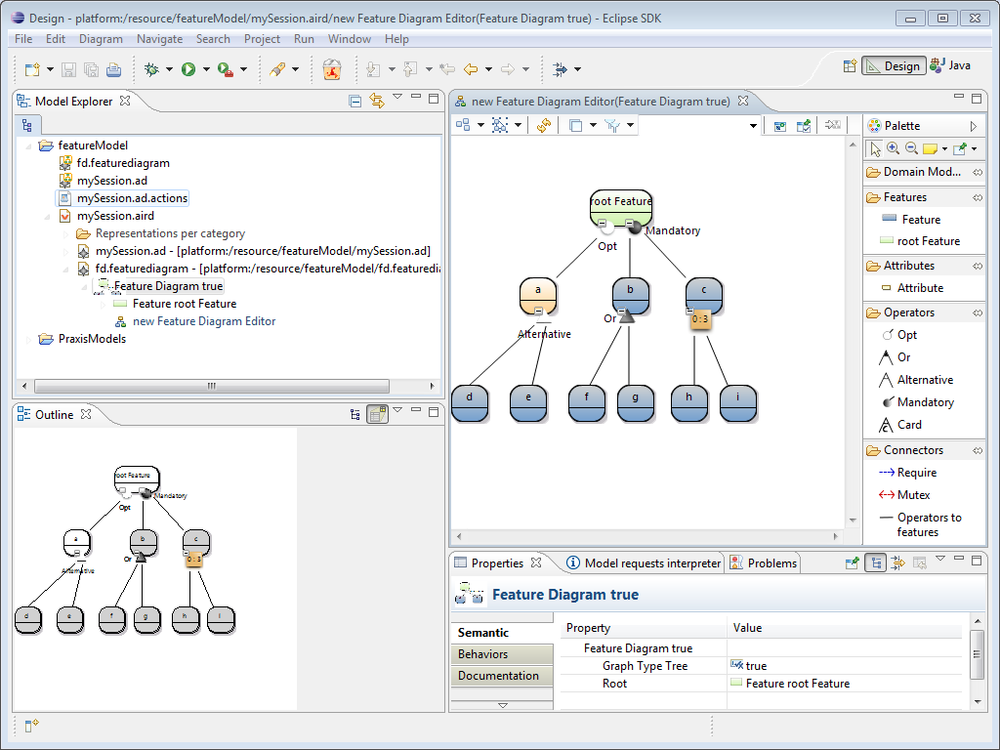

To add graphical element on the feature diagram simply click on the desired tool on drag and drop it in the feature diagram. The following figure presents the feature diagram editor.

Now, we present the elements that we can see on the palette :
Root feature : in case of features model as a tree (boolean graphStyleTree at true on FeatureDiagram element) , this feature is the top node parent of any other features.
Feature : a simple feature. Features are used to represent different alternatives.
Attribute : an attribute (with a name, a value and a type) can be added into Features adding information.
Opt : the feature children of this operator are optional. in term of choices of alternatives. The optional features ( like feature a of the example) are colored in orange.
Or : this operator means that at least on of its features must be chosen.
Alternative : (Xor) this operator means that only one feature must be chosen between its features. It corresponds to the "Xor" operator in the previous version.
Mandatory : (And) all features contained on this operator must be chosen. This operator corresponds to a"and" operator of the previous version.
Card : this operator permits to choose a given number of features children included between a lower bound (cardinality minimum) and a upper bound (cardinality maximum).
Require : this graphical constraint represents a feature that require another one.
Mutex : this graphical constraint link the features that are mutually exclusive each other. It means that these two features cannot be chosen together.
Operator to features : it is a link that rely operators to their features.
The next section presents how to add domain model element into features.